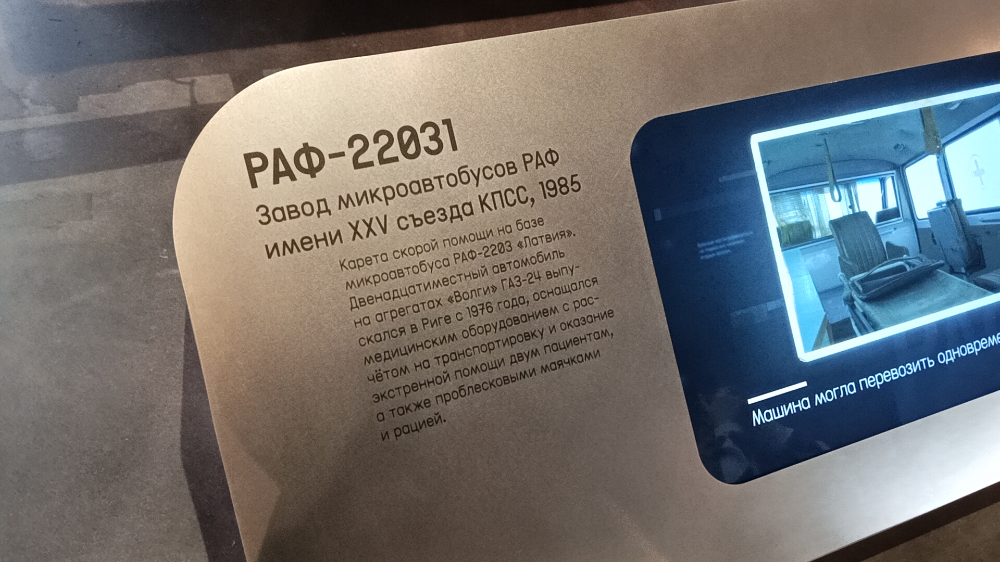

РАФ-22031
РАФ-22031 — карета скорой помощи на базе микроавтобуса РАФ-2203 «Латвия». Выпускалась на Рижском заводе микроавтобусов (Рига, Латвийская ССР).
Двенадцатиместный автомобиль на агрегатах «Волги» ГАЗ-24, оснащался медицинским оборудованием для транспортировки и оказания экстренной помощи.
Основные данные
| Модель | РАФ-22031 |
| Базовая модель | РАФ-2203 «Латвия» |
| Производитель | Завод микроавтобусов РАФ имени XXV съезда КПСС (Рига) |
| Год выпуска (экспонат) | 1985 |
| Двигатель | Агрегаты «Волги» ГАЗ-24 |
| Назначение | Транспортировка и оказание экстренной помощи |
| Вместимость | До 12 мест (2 пациента + медперсонал) |
| Текущее состояние | Не эксплуатируется (музейный экспонат) |
История
Начало производства
Рижский завод микроавтобусов начинает выпуск модели РАФ-2203 «Латвия» на агрегатах ГАЗ-24.
Выпуск экспоната
Выпущен экземпляр медицинской модификации РАФ-22031, ставший впоследствии музейным экспонатом.
В экспозиции музея
Сейчас автомобиль представлен в Музее Транспорта Москвы, напоминая о советской службе скорой помощи.
Особенности
Медицинское оборудование: Салон был оборудован для транспортировки и оказания экстренной помощи. В машине размещались носилки, медицинское оснащение, а также проблесковые маячки и рация для связи.
Вместимость: Автомобиль мог одновременно перевозить двух пациентов.
Фотогалерея

Медицинский микроавтобус с характерными проблесковыми маячками.

Описание модели РАФ-22031.
Нажмите на фото для увеличения
«Карета скорой помощи на базе микроавтобуса РАФ-2203 "Латвия". Двенадцатиместный автомобиль на агрегатах "Волги" ГАЗ-24 выпускался в Риге с 1976 года, оснащался медицинским оборудованием...».